Output
By default, BDSIM writes an output file with a summary of the model created, the particle coordinates generated, the options used, and basic energy deposition histograms. This can be turned off by executing BDSIM with:
bdsim --output=none
The output file name can be specified with:
bdsim --outfile="mydesiredname"
with no extension.
File Writing Policy
The default file name is “output”.
If no output file name is given and there is already a file called “output”, a suffix with an integer will be added, i.e. “output-1”.
BDSIM will overwrite an output file if -\-outfile is supplied with the same name again.
The behaviour is the same in both visualiser mode and batch mode.
A new output file is created for each
/run/beamOncommand in the visualiser.
Units
Units, unless specified, are SI (i.e. m, rad).
“energy” is in GeV and is the total energy of a particle unless labelled specifically (e.g. ‘kineticEnergy’).
Time is measured in nanoseconds.
Small letters denote local (to that object) coordinates, whereas capital letters represent global coordinates.
Output Format
The following output formats are provided:
Format |
Syntax |
Description |
|---|---|---|
None |
--output=none |
No output is written |
ROOT Event (Default) |
--output=rootevent |
A ROOT file with details of the model built, options used, seed states, and event-by-event information (default and recommended). |
With the default output format rootevent, data is written to a ROOT file. This format
is preferred as it lends itself nicely to particle physics information as it’s space
efficient (compressed binary), and can store and load complex custom structures. ROOT files
generally can always be read at a later date with ROOT even if the original software used
to create the files (BDSIM) is unavailable.
Note
ASCII Data - In the past BDSIM had ASCII output as well as some functionality in the pybdsim Python utility to deal with this. This has been deprecated and removed because it is just not suitable for particle physics-style data and analysis. It is cumbersome, inefficient and vastly inferior in the data structure. We highly encourage use of the ROOT output (rootevent format.). It is easy to explore the data files (see Basic Data Inspection) and the included analysis tools (see rebdsim - General Analysis Tool) and the supplied Python utilities (see Python Utilities, and pybdsim in particular) make the regular workflow very easy.
Not all information described may be written by default. Options described in Output Options allow control over what is stored. The default options give a detailed picture with an acceptable file size. The true amount of information produced in the simulation of every particle and the steps taken is tremendous and cannot be usefully stored.
As a general guideline, the following naming conventions are used:
Short Name |
Meaning |
|---|---|
Phits |
Primary hits |
Ploss |
Primary losses |
Eloss |
Energy loss |
PE |
Per element |
Coll |
Collimator |
Note
A “hit” is the point of first contact, whereas a “loss” is the last point that particle existed - in the case of a primary it is where it stopped being a primary.
Note
Energy loss is the energy deposited by particles along their step.
Output Data Selection & Reduction
Not all the variables in the output are filled by default. The default level of output is judged to be the most commonly useful for the purpose of BDSIM but there are many extra options to control the detail of the output as well as the ability to turn bits off. If certain optional data is turned off, the branches may be remove from the output Trees for efficiency.
option, storeMinimalData=1will reduce the data to an absolute minimum and other options can be used to restore data in an additive way. See below for more details.
This granularity is very useful when you have made small studies with the options you desire and now want to scale up the simulation to large statistics and the size of the data may become difficult to deal with. At this point, the user can turn off any data they may not need to save space.
If some output is not required, BDSIM will not generate the ‘hit’ information with sensitive detector classes automatically to improve computational speed and reduce memory usage during the simulation. This is handled automatically in BDSIM.
It is thoroughly recommend to consult all the options at Output Options. However, consider the following points to reduce output data size:
If energy loss hits are not required (e.g. maybe only the pre-made histograms will suffice), turn these off with the option
storeELoss.Eloss normally dominates the size of the output file as it has the largest number of hits with typically \(10^4\) energy deposition hits per primary.
By default some basic information is store in “ParticleData” for all particles used in the simulation. For a big study, it is worth turning this off as it’s replicated in every file.
sample, all;is convenient, especially at the start of a study, but you should only attach a sampler to specific places for a study withsample, range=NAMEOFELEMENT.
Minimal Data
When using the option storeMinimalData=1, the following options are turned off:
storeApertureImpacts
storeApertureImpactsHistograms
storeCollimatorInfo
storeCollimatorHits
storeELoss
storeELossHistograms
storeParticleData
storePrimaries
storePrimaryHistograms
storeTrajectory
storeModel
Warning
Note, this won’t respect alternative versions of these options such as “storeTrajectories”.
Therefore, there is no model (required for optics comparisons and loading samplers in analysis), no particle data, no energy deposition hits and 0 per-event histograms (primary hit, loss and energy deposition).
If used in combination with other output options, the other options are respected. This is irrespective of the order the options are set in the input gmad files. For example:
option, storeMinimalData=1,
storePrimaries=1;
Will turn off all the data, but restore the storage of the primary coordinates.
Output Information
The following information is recorded by default.
Header including software versions
The options and beam parameters that were used
A summary of the model
Run level summary information and histograms
Event level summary, primary coordinates, primary first hit (first physics point), last hit, energy deposition in the beam line, energy deposition histograms, and aperture impacts.
Although recorded by default, the Output Options allow control over these and parts can be turned off to reduce the output file size if required. The exact structure of the output is described in the following sections.
The following extra information can be optionally recorded from a BDSIM simulation:
Particle coordinates at a plane after each element - ‘sampler’ information (see Output at a Surface - Samplers).
Particle coordinates at a plane that is placed anywhere in the world by the user - ‘samplerplacement’ (see Output at an Arbitrary Plane - User Placed Sampler).
Energy deposition ‘hits’ from any component, the beam pipe vacuum, or the surrounding air.
Trajectories of all or certain particles (optional - see Output Options).
Detailed information from hits in a collimator - see Output Options.
Aperture impacts of various particles including primaries.
A single 3D histogram of any hits in the simulation (optional - see Scoring Map).
Scoring meshes that limit the step, can overlap geometry and record multiple quantities.
These are described in more detail below.
1) Samplers
Samplers are ‘attached’ to a beam line element by using the sample command:
sample, range=<element_name>;
See Output at a Surface - Samplers for more details. Note they record the passage of particles both backwards and forwards through the plane and are effectively passive with no material.
2) Sampler Placements
These are the same as samplers but can be placed anywhere in the world and may overlap with any other geometry. Care however, should be taken to avoid co-planar faces as Geant4 cannot handle this type of overlap. See Output at an Arbitrary Plane - User Placed Sampler for the syntax.
3) Energy Deposition
BDSIM by default records energy deposition from the beam pipe and magnet geometries. However, the energy deposition in the vacuum and surrounding air is not normally recorded to minimise the output file size. This can optionally be turned on. Note, the ‘vacuum’ is not a perfect vacuum as there is no such thing in Geant4. The vacuum in BDSIM is the typical vacuum of the warm section of the LHC at CERN.
See Output Options with options beginning with storeEloss.
4) Trajectories
Trajectories are a list of all the steps of a particle along it’s path through the model. There is typically a step for every particle as it enters or leaves a boundary as well as where a physics process is invoked. At each trajectory step point, the coordinates, momentum, total energy, particle type and last physics process are recorded as a snapshot of the particle at that point.
One “trajectory” is the record of one particle.
A “parent” is the particle / track / trajectory that created the current one.
A “daughter” particle / track / trajectory is one that came from another “parent” one.
In reality this is a big tree of information, but in the output each particle / track / trajectory is stored one after another in a vector. Each has a unique index (ID). The parent index is recorded with each trajectory as well as its index in the output vector so we can effectively navigate the particle physics history tree from any particle up to the primary.
We don’t store trajectory information by default because it is an incredible amount of information and hard to deal with sensibly. Turning on trajectory storage in the options will store by default, only the primary particle(s) trajectory(ies). We then use some options to specify (filter down to) a set of particles we’re interested in and also store the trajectories that connect these particles back to the primary. A set of subsequent options define which numbers will be stored for each trajectory and each point along the trajectory.
Filtering options: Trajectory Filtering Options
Storage options: Trajectory Storage Options
The trajectory filters are combined with a logical OR. So, if two filters are used, a trajectory will be stored if it matches either one OR the other. In analysis, the variable filters has Booleans stored for which filters a particular trajectory matched and can be used to disentangle them.
This logic can be changed by specifying
option, trajectoryFilterLogicAND=1;in the input GMAD where the more exclusive (i.e. less inclusive) AND logic will be applied. Therefore, only trajectories that meet all of the filters specified will be stored. This is useful to further reduce the data size and simplify analysis because the trajectories may not need to be filtered in analysis.
This trajectory information is highly useful for more involved analyses. It can also answer relatively simple questions like, “where are muons produced that reach my detector (i.e. sampler)?”. This would correspond to storing muon trajectories with the option that links them to a particular sampler and we would histogram the first point in each trajectory afterwards. e.g.
option, storeTrajectories=1,
storeTrajectoryParticleID="13 -13",
storeTrajectorySamplerID="samplername",
trajectoryFilterLogicAND=1;
5) Collimator Hits
Several options exist to allow extra collimator-specific information to be stored. Why collimators? These are usually the devices intended to first intercept the beam so it is highly useful to understand the history of each event with respect to the collimators. By default no extra collimator information is stored. The options allow for increasingly detailed information to be stored. These are listed in increasing amount of data below.
No collimator information - the default option.
option, storeCollimatorInfo=1;is used. Collimator geometry information is stored in the Model tree of the output. Per-collimator structures are created in the Event tree with a Boolean flag called primaryInteracted and primaryStopped for that collimator for each event. Additionally, the totalEnergyDeposited for that collimator (including weights) is filled. The other variables in these structures are left empty. In the event summary, the nCollimatorsInteracted and primaryAbsorbedInCollimator variables are also filled. No collimator hits are stored. Extra histograms are stored in the vector of per-event histograms. These are:CollPhitsPE: Primary hits but only for collimators (first physics processes for the primary).
CollPlossPE: Primary stopped in this element.
CollElossPE: Total energy deposition (per-event).
CollPInteractedPE: Boolean of whether primary passed through the collimator material on that event.
These are done per element (“PE”) which means one number for the whole collimator (e.g. energy deposition is integrated across the whole geometry of that one collimator). The first three are simply individual bins copied out of the general PhitsPE PlossPE and ElossPE histograms. Each bin in these histograms is for one collimator in the order it appears in the beam line. The
collimatorIndicesandcollimatorIndicesByNamein the Model tree can be used to match the collimators to the information stored in the Model tree.option, storeCollimatorInfo=1, storeCollimatorHits=1;is used. Similar to scenario 1 but in addition ‘hits’ with the coordinates are created for each collimator for primary particles. Note, that a primary particle can create more than one hit (which is a snapshot of a step in the collimator) on a single pass, and in a circular model the primary may hit on many turns.option, storeCollimatorInfo=1, storeCollimatorHitsIons=1;is used. Similar to scenario 2 but hits are generated for secondary ion fragments in addition to any primary particles. This is useful for ion collimation where ion fragments may carry significant energy.In combination with 1, 2 or 3,
option, storeCollimatorHitsLinks=1;may be used that stores the extra variables charge, mass, rigidity and kineticEnergy per hit in the collimator. These are added for whatever collimator hits are generated according to the other options.
Generally, store as little as is required. This is why several options are given. See
Output Options with options beginning with storeCollimator for more
details.
6) Aperture Impacts
Aperture impacts are the location a particle hits the inside of the aperture (identified as a particle
going away from the beam axis in the beam pipe). By default, this information is turned on and
store in the Event tree as a branch called ApertureImpacts. By default it only stores hits for
the primary particle(s) as this is a relatively small but useful piece of information. A per-event
histogram is also stored by default for the (unweighted) primary aperture impacts versus S.
This information can be provided for not just the primary but for all ions with the option
storeApertureImpactsIons=1, or for all particles with the option storeApertureImpactsAll=1.
The aperture impacts can be turned off with
option, storeApertureImpacts=0;.The aperture impacts histogram can be turned off with
option, storeApertureImpactsHistograms=0;.There are currently no walls between beam pipes with large aperture changes so particles may not register as impacting here (being developed).
Even for 1 primary particle, there may be more than 1 aperture impact (per event) because the primary may leave and re-enter the beam pipe.
The option
apertureImpactsMinimumKEmay be used to set a minimum kinetic energy required for an aperture hit to be generated. This is useful if you store aperture impacts for all particles but want to limit to a high energy case and avoid data inflation from the more numerous low energy particles. See Output Options for more details.
7) Single 3D Energy Deposition Histogram
This is a single 3D histogram created from whatever energy deposition are generated according to the general options. This is historically called a “scoring map” but is not a scoring mesh or map in the usual Geant4 sense.
See Scoring Map for syntax.
8) Scoring Meshes
Scoring meshes are 3D histograms that can be overlaid on the geometry (with out fear of overlaps or bad tracking) to score (integrate or record) a chosen quantity. For example, a 3D grid may be specified to record the dose due to protons.
See Scoring for a complete description of how to specify this in BDSIM.
There are many possible variations such as scoring only for certain particles, scoring multiple quantities on the same mesh, of scoring by material. Some example uses could be:
Neutron dose in coils of magnet.
Ambient dose in air.
H10 dose calculation.
Charge deposited in target.
Particle Identification
BDSIM uses the standard Particle Data Group identification numbers for each particle type, similarly to Geant4. These are typically referred to as “partID”. A table of the particles and explanation of the numbering scheme can be found online:
https://pdg.lbl.gov/2021/web/viewer.html?file=%2F2021/reviews/rpp2020-rev-monte-carlo-numbering.pdf.
Notes:
These are integers.
A negative value represents the opposite charge from the definition of the particle, but which doesn’t necessarily mean it’s negatively charged.
A table of common particles is listed below:
Name |
PDG ID |
|---|---|
proton |
2212 |
electron |
11 |
positron |
-11 |
gamma or photon |
22 |
neutron |
2112 |
pion positive |
211 |
pion negative |
-211 |
pion zero |
111 |
muon negative |
13 |
muon positive |
-13 |
Ion Identification
Several parts of BDSIM output (samplers, aperture impacts, trajectories) have the variable isIon, which is a Boolean to identify whether the hit is an ion or not. This is true for:
All ions greater than Hydrogen
A Hydrogen ion - i.e. a proton with 1 or more bound electron.
This is note true for just a proton, which is considered a separate particle. In Geant4, a proton is both a particle and also considered an ion, however there are different physics processes for each.
Basic Data Inspection
To view the data as shown here, we recommend using a ROOT tree browser - TBrowser. Start ROOT (optionally with the file path specified to put it at the top of the list).
{kind=link}
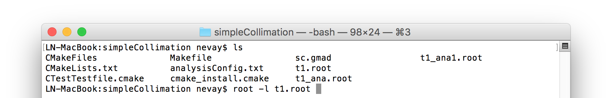
The -l option stops the logo splash screen coming up and is slightly quicker.
While in the ROOT interpreter, enter the following command to ‘construct’ a TBrowser object.
{kind=link}
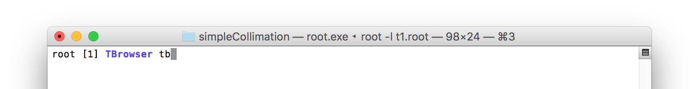
Double-click the file and then the ‘Trees’ (small folders with green leaf on them) to explore the hierarchy of the file. Eventually, individual variables can be double-clicked on to give a preview histogram on-the-fly that is a histogram of all entries in the Tree (i.e. all events in the Event Tree). If the variable is a vector, each item in the vector is entered (‘filled’) into the histogram.
{kind=link}
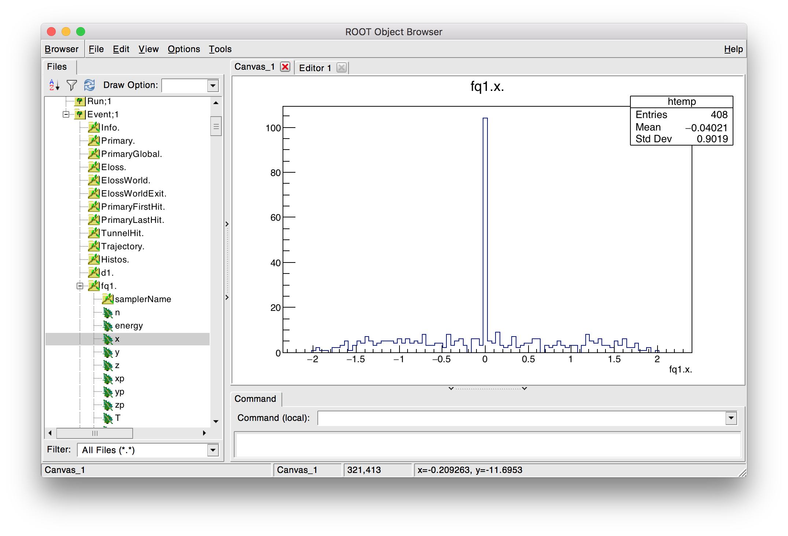
Note
If a file is open in ROOT in a TBrowser but has been overwritten externally, it will not show the correct contents - close the TBrowser and ROOT and reopen it.
Structure Of Output
BDSIM uses a series of classes to accumulate information about a Geant4 Run and Event. Instances of these classes are ‘filled’ with information during the simulation and copied to the output.
In the case of the ROOT event output format, these classes are stored directly in the file so that the same classes can be used by the output analysis tool (rebdsim) to read and process the data. A BDSIM ROOT event file has the following structure:
{kind=link}
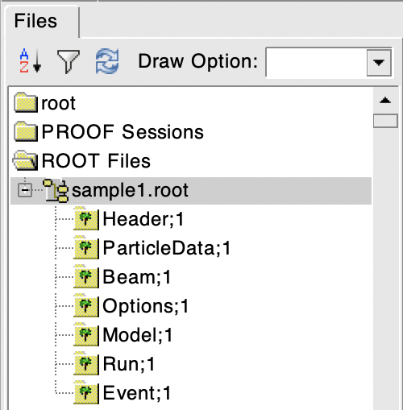
Contents of a BDSIM ROOT Event format file.
The file consists of four ROOT ‘trees’ each with ‘branches’ that represent instances of the BDSIM classes. The trees are:
Tree Name |
Description |
|---|---|
Header |
Details about the file type and software versions |
ParticleData |
Information about all particles and ions used in the simulation |
Beam |
A record of all options associated with the beam definition |
Options |
A record of all options used by BDSIM |
Model |
A record of the lengths and placement transforms of every element built by BDSIM in the accelerator beam line suitable for recreating global coordinates or visualising trajectories |
Run |
Information collected per Run |
Event |
Information collected per Event |
Header Tree
{kind=link}
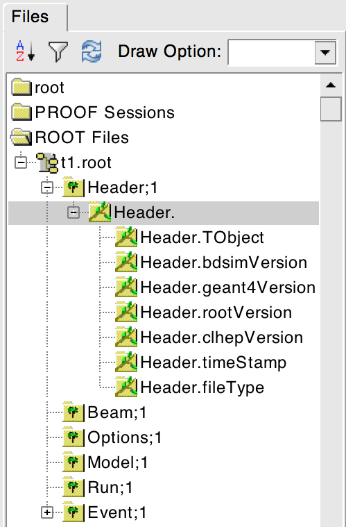
The header tree contains a single branch called “Header.” (note the “.”). This branch
represents a single instance of BDSOutputROOTEventHeader. This stores the
various software libraries BDSIM is compiled against, as well as the BDSIM version.
It also stores the time the file was created and the file type, i.e. whether the file
is from BDSIM, rebdsim or rebdsimCombine.
BDSOutputROOTEventHeader
Variable Name |
Type |
Description |
|---|---|---|
bdsimVersion |
std::string |
Version of BDSIM used |
geant4Version |
std::string |
Version of Geant4 used |
rootVersion |
std::string |
Version of ROOT used |
clhepVersion |
std::string |
Version of CLHEP used |
timeStamp |
std::string |
Time and date file was created |
fileType |
std::string |
String describing what stage of simulation the file came from |
dataVersion |
int |
BDSIM data format version |
doublePrecisionOutput |
bool |
Whether BDSIM was compiled with double precision for output |
analysedFiles |
std::vector<std::string> |
List of files analysed in the case of rebdsim, rebdsimHistoMerge, rebdsimOptics and rebdsimOrbit |
combinedFiles |
std::vector<std::string> |
List of files combined together in rebdsimCombine |
nTrajectoryFilters |
int |
The total number of trajectory filters and therefore the number of bits in Event.Trajectory.filters. |
trajectoryFilters |
std::vector<std::string> |
The name of each trajectory filter. |
skimmedFile |
bool |
Whether this file’s Event tree is made of skimmed events. |
nOriginalEvents (*) |
unsigned long long int |
If a skimmed file, this is the number of events in the original file. |
nEventsRequested (*) |
unsigned long long int |
Number of events requested to be simulated from the file. |
nEventsInFile (*) |
unsigned long long int |
Number of events in the input distribution file. |
nEventsInFileSkipped (*) |
unsigned long long int |
Number of events from the distribution file that were skipped due to filters. |
distrFileLoopNTimes |
unsigned int |
Number of times to replay a given distribution file. |
(*) This variable may only be filled in the second entry of the tree as they are only available at the end of a run and ROOT does not permit overwriting an entry. The first entry to the header tree is written when the file is opened and must be there in case of a crash or the BDSIM instance was killed.
ParticleData Tree
{kind=link}
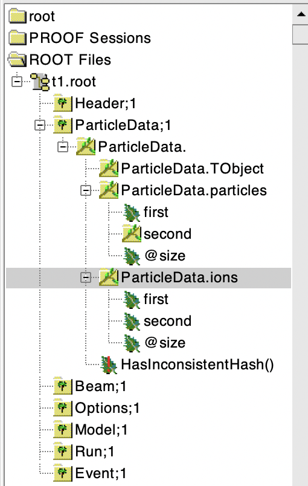
The ParticleData tree contains a single branch called “ParticleData.” (note the “.”). This
branch represents a single instance of BDSOutputROOTParticleData. This stores
two maps (like dictionaries) of the particle and ion information for each particle / ion
used in the simulation (only, i.e. not all that Geant4 supports). The map goes from
an integer, the Particle Data Group ID, to the particle or ion info that are stored
in simple C++ structures called BDSOutputROOTParticleData::ParticleInfo and
BDSOutputROOTParticleData::IonInfo respectively. These contain the name, charge,
mass, and in the case of ions, additionally A and Z. The both have a function called
rigidity that can calculate the rigidity of the particle for a given total
energy - this is used during the execution of BDSIM when rigidities are requested to
be stored.
Variable Name |
Type |
Description |
|---|---|---|
particles |
std::map<int, BDSOutputROOTParticleData::ParticleInfo> |
Map of PDG ID to particle info. |
ions |
std::map<int, BDSOutputROOTParticleData::IonInfo> |
Map of PDG ID to ion info. |
ParticleInfo Struct
Variable Name |
Type |
Description |
|---|---|---|
name |
std::string |
Name of particle |
charge |
int |
Particle charge in units of e |
mass |
double |
Particle Data Group mass in GeV |
IonInfo Struct
Variable Name |
Type |
Description |
|---|---|---|
name |
std::string |
Name of particle |
charge |
int |
Particle charge in units of e |
mass |
double |
Particle Data Group mass in GeV |
a |
int |
Mass number - number of neutrons and protons together |
z |
int |
Atomic number - number of protons |
Beam Tree
{kind=link}
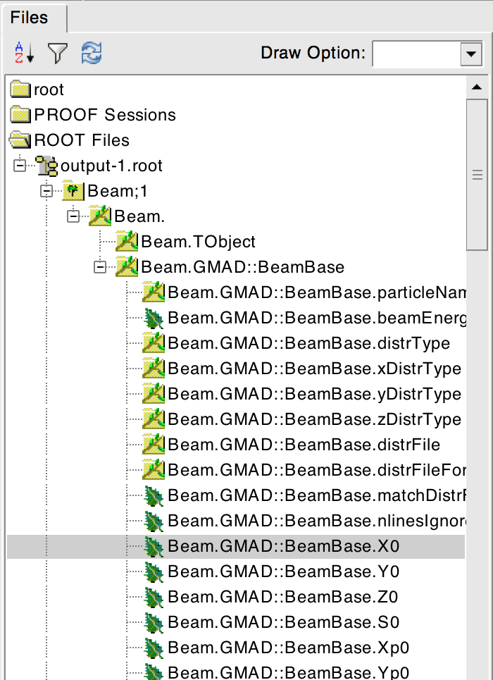
The beam tree contains a single branch called “Beam.” (note the “.”). This branch
represents an instance of parser/BeamBase.hh. The tree typically contains one
entry, as only one definition of the beam was used per execution of BDSIM.
Options Tree
{kind=link}
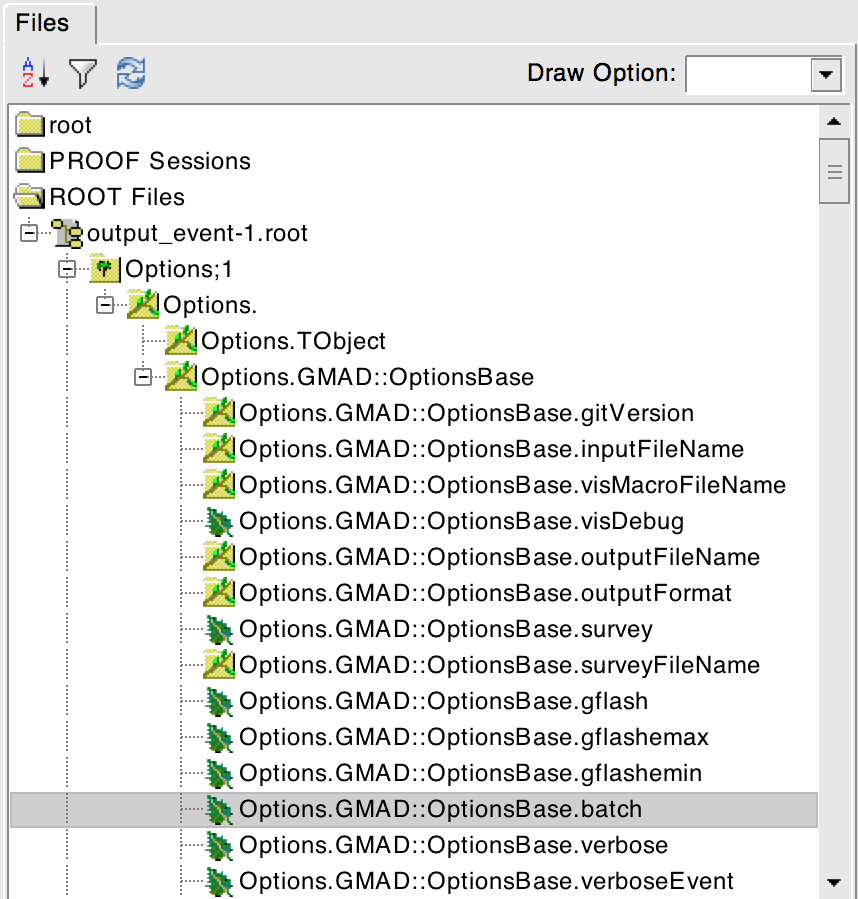
The options tree contains a single branch called “Options.” (note the “.”). This branch
represents an instance of parser/OptionsBase.hh. The tree typically contains one
entry, as only one set of options were used per execution of BDSIM.
Model Tree
{kind=link}
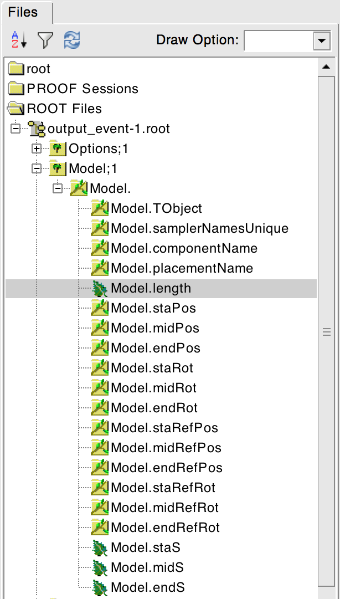
This tree contains a single branch called “Model.”. This branch represents an instance
of include/BDSOutputROOTEventModel.hh. There is also typically one entry, as there
is one model. Note that some variables here appear as ‘leaf’ icons and some as ‘branch’ icons.
This is because some of the variables are vectors.
BDSOutputROOTEventModel
One entry in the model tree represents one beam line.
Variable Name |
Type |
Description |
|---|---|---|
samplerNamesUnique |
std::vector<std::string> |
The unique names of each of the plane samplers. These are identical to the names of the sampler branches found in the Event tree. |
samplerCNamesUnique |
std::vector<std::string> |
The unique names of each of the cylindrical samplers. |
samplerSNamesUnique |
std::vector<std::string> |
The unique names of each of the spherical samplers. |
componentName |
std::vector<std::string> |
The beamline component names |
placementName |
std::vector<std::string> |
Unique name for each placement |
componentType |
std::vector<std::string> |
Beamline component type; “drift”, “sbend”, etc. |
length |
std::vector<float> |
Component length (m) |
staPos |
std::vector<TVector3> |
Global coordinates of start of beamline element (m) |
midPos |
std::vector<TVector3> |
Global coordinates of middle of beamline element (m) |
endPos |
std::vector<TVector3> |
Global coordinates of end of beamline element (m) |
staRot |
std::vector<TRotation> |
Global rotation for the start of this beamline element |
midRot |
std::vector<TRotation> |
Global rotation for the middle of this beamline element |
endRot |
std::vector<TRotation> |
Global rotation for the end of this beamline element |
staRefPos |
std::vector<TVector3> |
Global coordinates for the start of the beamline elements along the reference trajectory and without any tilt or rotation from the component |
midRefPos |
std::vector<TVector3> |
Global coordinates for the middle of the beamline elements along the reference trajectory and without any tilt or rotation from the component |
endRefPos |
std::vector<TVector3> |
Global coordinates for the start of the beamline elements along the reference trajectory and without any tilt or rotation from the component |
staRefRot |
std::vector<TRotation> |
Global rotation matrix for start of the beamline elements along the reference trajectory and without any tilt or rotation from the component |
midRefRot |
std::vector<TRotation> |
Global rotation matrix for middle of the beamline elements along the reference trajectory and without any tilt or rotation from the component |
endRefRot |
std::vector<TRotation> |
Global rotation matrix for middle of the beamline elements along the reference trajectory and without any tilt or rotation from the component |
tilt |
std::vector<float> |
Rotation in radians of the element when placed with respect to the curvilinear frame |
offsetX |
std::vector<float> |
Offset in metres of the element when placed with respect to the curvilinear frame - horizontal |
offsetY |
std::vector<float> |
Offset in metres of the element when placed with respect to the curvilinear frame - verical |
staS |
std::vector<float> |
S-position of start of start of element (m) |
midS |
std::vector<float> |
S-position of start of middle of element (m) |
endS |
std::vector<float> |
S-position of start of end of element (m) |
beamPipeType |
std::vector<std::string> |
Aperture type; “circular”, “lhc”, etc. |
beamPipeAper1 |
std::vector<double> |
Aperture aper1 (m) |
beamPipeAper2 |
std::vector<double> |
Aperture aper2 (m) |
beamPipeAper3 |
std::vector<double> |
Aperture aper3 (m) |
beamPipeAper4 |
std::vector<double> |
Aperture aper4 (m) |
material |
std::vector<std::string> |
Main material associated with an element. For a drift, this is the beam pipe material; for a magnet, the yoke material; a collimator, the main material. |
k1 - k12 |
std::vector<float> |
Normalised magnet strength associated with element (1st - 12th order) |
k12 - k122 |
std::vector<float> |
Normalised skew magnet strength associated with element (1st - 12th order) |
ks |
std::vector<float> |
Normalised solenoid strength |
hkick |
std::vector<float> |
Fractional momentum kick in horizontal direction |
vkick |
std::vector<float> |
Fractional momentum kick in vertical direction |
bField |
std::vector<float> |
Magnetic field magnitude (T) |
eField |
std::vector<float> |
Electric field magnitude (MV) |
e1 |
std::vector<float> |
Input pole face angle (note sbend / rbend convention) (rad) |
e2 |
std::vector<float> |
Output pole face angle (rad) |
hgap |
std::vector<float> |
Half-gap of pole tips for dipoles (m) |
fint |
std::vector<float> |
Fringe-field integral |
fintx |
std::vector<float> |
Fringe-field integral for exit pole face |
fintk2 |
std::vector<float> |
2nd fringe-field integral |
fintxk2 |
std::vector<float> |
2nd fringe-field integral for exit pole face |
Additionally:
pvNames |
std::vector<std::vector<std::string> |
Name of physical volume(s) placed in the world for a given beamline element |
pvNamesWPointer |
std::vector<std::vector<std::string> |
Same as pvNames but with the pointer appended to the name |
midT |
std::vector<float> |
Synchronous time (s) from the start of the line to the middle of that element as calculated by BDSIM |
staP |
std::vector<float> |
The calculated assumed momentum (GeV/c) at the start of the element as calculated by BDSIM |
staEk |
std::vector<float> |
The calculated assumed kinetic energy (GeV) at the start of the element as calculated by BDSIM |
Optional collimator information also store in the model.
Variable Name |
Type |
Description |
|---|---|---|
storeCollimatorInfo |
bool |
Whether the optional collimator information was stored. |
collimatorIndices |
std::vector<int> |
Index of each collimator in this beam line. Optional. |
collimatorIndicesByName |
std::map<std::string, int> |
Map of collimator names to beam line indices. Includes both the accelerator component name and the placement name which is unique. |
collimatorInfo |
std::vector<Info> |
“Info” = BDSOutputROOTEventCollimatorInfo. Select for collimators. Optional. |
collimatorBranchNamesUnique |
std::vector<std::string> |
Name of branches in Event tree created specifically for collimator hits. |
Information stored about any scoring meshes used.
Variable Name |
Type |
Description |
|---|---|---|
scoringMeshTranslation |
std::map<std::string, TVector3> |
Global translation of each scoring mesh by name (m). |
scoringMeshRotation |
std::map<std::string, TRotation> |
Global rotation of each scoring mesh by name. |
scoringMeshName |
std::vector<std::string> |
All names of scoring meshes in the model. |
Information stored about materials for trajectory storage.
Variable Name |
Type |
Description |
|---|---|---|
materialIDToName |
std::map<short int, std::string> |
A map of the bdsim-assigned integer material ID to its real name as defined in the input / code. |
materialNameToID |
std::map<std::string, short int> |
The same map but the other way around. |
Constant information stored about any cylindrical or spherical samplers.
Variable Name |
Type |
Description |
|---|---|---|
samplerCRadius |
std::map<std::string, double> |
A map of cylindrical sampler unique name to its radius in m. |
samplerSRadius |
std::map<std::string, double> |
A map of spherical sampler unique name to its radius in m. |
BDSOutputROOTEventCollimatorInfo
Variable Name |
Type |
Description |
|---|---|---|
componentName |
std::string |
Collimator name |
componentType |
std::string |
Type of collimator |
length |
double |
Length (m) |
tilt |
double |
Tilt (rad) |
offsetX |
offsetX |
Horizontal offset (m) |
offsetY |
offsetY |
Vertical offset (m) |
material |
std::string |
Collimator material |
xSizeIn |
double |
Horizontal half aperture at entrance (m) |
ySizeIn |
double |
Vertical half aperture at entrance (m) |
xSizeOut |
double |
Horizontal half aperture at exit (m) |
ySizeOut |
double |
Vertical half aperture at exit(m) |
Run Tree
{kind=link}
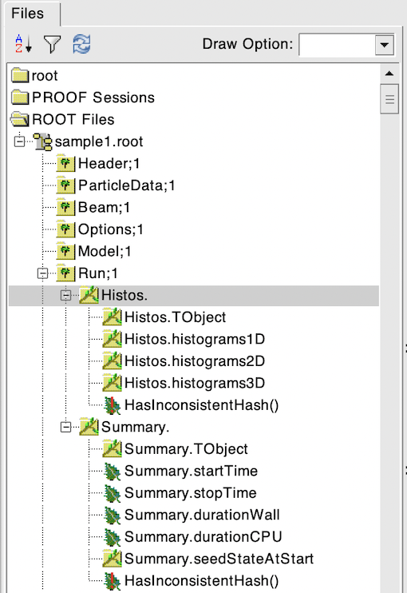
This tree contains two branches called “Histos.” and “Summary.” which represent instances of
include/BDSOutputROOTEventHistograms.hh and include/BSOutputROOTRunInfo,
respectively. See:
Histos contains vectors of any 1D, 2D and 3D histograms that are produced per run. Currently, these are ‘simple histograms’ and not the per-event average ones for the run.
Event Tree
{kind=link}
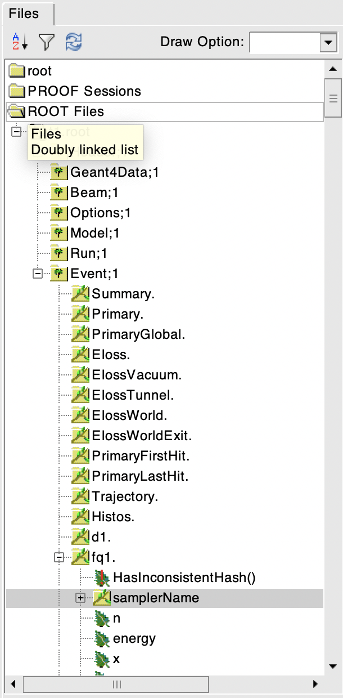
This tree contains information on a per-event basis. Everything shown in the above tree has a different value per-event run in BDSIM.
Branch Name |
Type |
Description |
|---|---|---|
Summary (+) |
BDSOutputROOTEventInfo |
Per-event summary information. |
Primary (*) |
BDSOutputROOTEventSampler<float> |
A record of the coordinates at the start of the simulation (before tracking). This includes all extra sampler variables irrespective of the options that control the optional variables. |
PrimaryGlobal (*) |
BDSOutputROOTEventCoords |
Global Cartesian coordinates of the primary particle. These are the same as those in “Primary” unless S0 is specified in the beam distribution. |
Eloss |
BDSOutputROOTEventLoss |
Coordinates of energy deposition in the accelerator material. |
ElossVacuum (*) |
BDSOutputROOTEventLoss |
Coordinates of energy deposition in the accelerator vacuum only. |
ElossTunnel (*) |
BDSOutputROOTEventLoss |
Coordinates of energy deposition in the tunnel material. |
ElossWorld (*) |
BDSOutputROOTEventLoss |
Coordinates of energy deposition in the world volume - by default the air. |
ElossWorldContents (*) |
BDSOutputROOTEventLossWorld |
Global coordinates of energy deposition in any volume supplied inside an externally supplied world volume. |
ElossWorldExit (*) |
BDSOutputROOTEventLossWorld |
Global coordinates of the point any track exits the world volume and therefore the simulation. |
PrimaryFirstHit |
BDSOutputROOTEventLoss |
Energy deposit ‘hit’ representing the first step on the primary trajectory that wasn’t due to tracking, i.e. the first interaction where a physics process was induced. |
PrimaryLastHit |
BDSOutputROOTEventLoss |
The end point of the primary trajectory. If S is -1 (m) it means the particle finished away from the beam line where there was no curvilinear coordinate system present. |
ApertureImpacts (*) |
BDSOutputROOTEventAperture |
The point in curvilinear coordinates where particles (primary only by default) exit the aperture of the machine. Note, the same particle can pass through the aperture multiple times. |
Trajectory (*) |
BDSOutputROOTEventTrajectory |
A record of all the steps the primary particle took and the associated physics processes |
Histos |
BDSOutputROOTEventHistograms |
Per-event histograms in vectors. |
xxxxx |
BDSOutputROOTEventSampler<float> |
A dynamically generated branch created per sampler (here named ‘xxxxx’) that contains a record of all particles that passed through the sampler during the event. Note: this includes both primary and secondary particles. |
xxxxx |
BDSOutputROOTEventSamplerC |
A dynamically generated branch created per cylindrical sampler (here named ‘xxxxx’) that contains a record of all particles that passed through the cylindrical sampler during the event. |
xxxxx |
BDSOutputROOTEventSamplerS |
A dynamically generated branch created per spherical sampler (here named ‘xxxxx’) that contains a record of all particles that passed through the spherical sampler during the event. |
COLL_xxxx (**) |
BDSOutputROOTEventCollimator |
A dynamically generated branch created per
collimator when the |
(+) This was called “Info” in BDSIM before V1.3.
(*) This is an optional branch that may not be present if its storage is turned off. See the option that matches the name of the branch.
ElossWorldContents is only included if the option
storeElossWorldContentsis turned on or importance sampling is used. It is possible to store only the integral in the Summary branch using the optionsstoreElossWorldContentsIntegralandstoreElossWorldIntegralwithout the corresponding optionsstoreElossWorldContentsandstoreElossWorld, which avoids the large file size from the individual energy deposition hits.(**) COLL_xxxx is only added per collimator when one of the options
storeCollimatorInfo,storeCollimatorHits,storeCollimatorHitsIons,storeCollimatorHitsAllis used.
The types and names of the contents of each class can be found in the header files in
bdsim/include/BDSOutputROOTEvent*.hh. The contents of the classes are described below.
Warning
For large S0 in a large model, a large distance as compared to the size of the beam may displace the primary coordinates, e.g. 1km offset for 1um beam. For this reason the PrimaryGlobal structure always uses double precision numbers, unlike the Primary structure and the other samplers that use floating point precision numbers (unless the ROOTDOUBLE CMake option is used at compilation time for double precision in the samplers).
BDSOutputROOTEventAperture
Variable |
Type |
Description |
|---|---|---|
n |
int |
The number of aperture impacts for this event. |
energy |
std::vector<float> |
The total energy of each particle as it hit. |
S |
std::vector<double> |
The (global) curvilinear S position (m) of the hit. |
weight |
std::vector<float> |
The associated statistical weight. |
isPrimary |
std::vector<bool> |
Whether each hit for this event was caused by a primary. |
firstPrimaryImpact |
std::vector<bool> |
Whether the hit is the first primary one for this event. |
partID |
std::vector<int> |
PDG particle ID of the particle. |
turn |
std::vector<int> |
Turn number (1-counting) the hit happened on. |
x |
std::vector<float> |
Local x of hit (m). |
y |
std::vector<float> |
Local y of hit (m). |
xp |
std::vector<float> |
Local xp of hit (x component of unit momentum vector). |
yp |
std::vector<float> |
Local yp of hit (y component of unit momentum vector). |
T |
std::vector<float> |
Global time of hit (ns). |
kineticEnergy |
std::vector<float> |
Kinetic energy of particle as it hit. |
isIon |
std::vector<bool> |
Whether the hit is caused by an ion. |
ionA |
std::vector<int> |
Ion atomic mass number. |
ionZ |
std::vector<int> |
Ion atomic number. |
nElectrons |
std::vector<int> |
Number of bound electrons in case of an ion. 0 otherwise. |
trackID |
std::vector<int> |
Track ID number of the particle that hit. |
parentID |
std::vector<int> |
Track ID number of the parent particle. |
modelID |
std::vector<int> |
Index in beam line of component hit (0-counting). |
BDSOutputROOTEventInfo
Variable |
Type |
Description |
|---|---|---|
startTime |
time_t |
Time stamp at start of event |
stopTime |
time_t |
Time stamp at end of event |
durationWall |
float |
Duration (wall time) of event in seconds |
durationCPU |
float |
Duration (CPU time) of event in seconds |
seedStateAtStart |
std::string |
State of random number generator at the start of the event as provided by CLHEP |
index |
int |
Index of the event (0 counting) |
aborted |
bool |
Whether event was aborted or not |
primaryHitMachine |
bool |
Whether the primary particle hit the machine. This is judged by whether there are any energy deposition hits or not. If no physics processes are registered this won’t work correctly. |
primaryAbsorbedInCollimator |
bool |
Whether the primary particle stopped in a collimator or not. |
memoryUsageMb |
double |
Memory usage of the whole program at the the current event including the geometry. |
energyDeposited |
double |
(GeV) Integrated energy in Eloss including the statistical weights. |
energyDepositedVacuum |
double |
(GeV) Integrated energy in ElossVacuum the statistical weights. |
energyDepositedWorld |
double |
(GeV) Integrated energy in the ElossWorld structure including the statistical weight. |
energyDepositedTunnel |
double |
(GeV) Integrated energy in the ElossTunnel including the statistical weight. |
energyWorldExit |
double |
(GeV) Integrated energy of all particles including their rest mass leaving the world volume and therefore the simulation. |
energyWorldExitKinetic |
double |
(GeV) Integrated kinetic energy of all particles leaving the world volume. |
energyImpactingAperture |
double |
(GeV) Integrated energy of all particles including their rest mass impacting the aperture and including their weight. |
energyImpactingApertureKinetic |
double |
(GeV) Integrated kinetic energy of all particles impacting the aperture and including their weight. |
energyKilled |
double |
(GeV) Integrated energy including their rest mass of any particles that were artificially killed in the stacking action. |
energyTotal |
double |
The sum of the above energies for the current event. |
nCollimatorsInteracted |
int |
The number of collimators the primary particle interacted with. |
nTracks |
long long int |
Number of tracks created in the event. |
Note
energyDepositedVacuum will only be non-zero if the option storeElossVacuum
is on which is off by default.
Note
energyDepositedWorld will only be non-zero if either the options storeElossWorld
or storeElossWorldIntegral are on which are off by default. If storeElossWorldIntegral
is used, the energy deposition hits will be generated but won’t be written to file to save space.
Similarly, the option storeElossWorldContentsIntegral can be used to store the integral
only in the event summary of the energy deposition in the world daughter volumes when the
an externally provided world volume is used.
Note
energyWorldExit will only be non-zero if Geant4.10.3 or later is used as well
as the option storeElossWorld is on that is off by default.
Note
nCollimatorsInteracted will only be non-zero if the option storeCollimatorInfo
is turned on which is off by default.
Warning
One would expect the parameter energyTotal which is the sum of the energies to be equal to the incoming beam energy. This in reality depends on the physics list used as well as the production range cuts. Furthermore, ions from the accelerator material may be liberated leading to an inflated total energy as their rest mass is also counted. This is non-trivial to correct and this value is provided only as a guide. The physics library and BDSIM-provided tracking both conserve energy but it is highly non-trivial to ensure all changes are recorded.
BDSOutputROOTEventLoss
Energy deposition hits are the most numerous, so not all information is recorded by default. Extra information can be recorded but this typically dominates the output file size.
Variable |
Type |
Description |
|---|---|---|
n |
int |
The number of energy deposition hits for this event |
energy |
std::vector<float> |
Vector of energy of each piece of energy deposition |
S |
std::vector<float> |
Corresponding curvilinear S position (m) of energy deposition |
weight |
std::vector<float> |
Corresponding weight |
partID |
std::vector<int> |
(optional) Particle ID of particle that caused energy deposition |
trackID |
std::vector<int> |
(optional) Track ID of particle that caused energy deposition |
parentID |
std::vector<int> |
(optional) Track ID of the parent particle |
modelID |
std::vector<int> |
(optional) Index in model tree for where deposition occurred |
turn |
std::vector<int> |
(optional) Turn in circular machine on which hit occurred |
x |
std::vector<float> |
(optional) Local X of energy deposition (m) |
y |
std::vector<float> |
(optional) Local Y of energy deposition (m) |
z |
std::vector<float> |
(optional) Local Z of energy deposition (m) |
X |
std::vector<float> |
(optional) Global X of energy deposition (m) |
Y |
std::vector<float> |
(optional) Global Y of energy deposition (m) |
Z |
std::vector<float> |
(optional) Global Z of energy deposition (m) |
T |
std::vector<float> |
(optional) Global time-of-flight since beginning of event (ns) |
stepLength |
std::vector<float> |
(optional) Length of step that the energy deposition was produced in (m) |
preStepKineticEnergy |
std::vector<float> |
(optional) The kinetic energy of the particle (any species) at the starting point of the step that the energy deposition was produced in |
postStepProcessType |
std::vector<int> |
Post step physics process ID in Geant4 notation |
postStepProcessSubType |
std::vector<int> |
Post step physics process sub-ID in Geant4 notation |
BDSOutputROOTEventLossWorld
For the point where particles exit the world, there is no concept of a curvilinear coordinate system so there are only global coordinates recorded.
Variable |
Type |
Description |
|---|---|---|
n |
int |
The number of exits for this event |
totalEnergy |
std::vector<float> |
Vector of total energy of each particle exiting |
postStepKineticEnergy |
std::vector<float> |
The kinetic energy of the particle (any species) at the end point as the particle exited. |
X |
std::vector<float> |
(optional) Global X of exit point (m) |
Y |
std::vector<float> |
(optional) Global Y of exit point (m) |
Z |
std::vector<float> |
(optional) Global Z of exit point (m) |
T |
std::vector<float> |
(optional) Global time-of-flight since beginning of event (ns) |
partID |
std::vector<int> |
(optional) Particle ID of particle |
trackID |
std::vector<int> |
(optional) Track ID of particle |
parentID |
std::vector<int> |
(optional) Track ID of the parent particle |
weight |
std::vector<float> |
Corresponding weight |
turn |
std::vector<int> |
(optional) Turn in circular machine on loss |
BDSOutputROOTEventRunInfo
Variable |
Type |
Description |
|---|---|---|
startTime |
time_t |
Time stamp at start of run |
stopTime |
time_t |
Time stamp at end of run |
durationWall |
float |
Duration (wall time) of run in seconds |
durationCPU |
float |
Duration (CPU time) of run in seconds |
seedStateAtStart |
std::string |
State of random number generator at the start of the run as provided by CLHEP |
nEventsInFile |
long |
Number of events from input distribution file that were found. Excludes any ignored or skipped events, but includes all events after those irrespective of filters. |
nEventsInFileSkipped |
long |
Number of events if any that were skipped from an input distribution given the filters used. |
BDSOutputROOTEventTrajectory
By default, only the primary particle trajectory is stored - see Output Options for which options to set to control the level of detail stored in the trajectories.
Currently, some degenerate information is stored for completeness. This may be removed in future versions (e.g. the pre-step point of the part of the trajectory is the same as the post-step point of the previous part of the trajectory).
Each entry in the vectors in BDSOutputROOTEventTrajectory represents one step along the particle trajectory with a ‘pre-step’ and ‘post-step’ point - information associated with the start and end of that step.
The outermost vector is a vector of trajectories for that event. i.e. a trajectory of a proton, next a trajectory of a gamma
The innermost vector is a vector of the step points along that trajectory
Examples:
energyDeposit[][0]
(above) This is the energy deposited along the first (0th) step of all trajectories in this event.
energyDeposit[0][]
This is the first (0th) trajectory for each event and the energy deposited of all steps of that trajectory.
These are written in the ROOT TTree::Draw syntax that can be used with rebdsim for analysis. Here,
[]means all.
Note
Both unsigned int and int types are used here. The C++ standard dictates
a minimum number of bits for these as 16 bits. This corresponds to a range of -32768 to
32768 for a signed int and 0 to 65535 for the unsigned int. If storing track IDs beyond
this, the track ID may wrap around to 0. However, this is expected to be very unlikely
in practice. Also, in practice most compilers will use a larger bit depth by default as
it is more optimal on most hardware.
Variable |
Type |
Description |
|---|---|---|
n |
int |
The number of trajectories stored for this event |
filters |
std::bitset<10> |
Bits (0 or 1) representing which filters this particular trajectory matched. See the header for their description. |
partID |
std::vector<int> |
The PDG ID for the particle in each trajectory step |
trackID |
std::vector<unsigned int> |
The track ID for the particle in each trajectory step |
parentID |
std::vector<unsigned int> |
The track ID of the parent particle for each trajectory step |
parentIndex |
std::vector<unsigned int> |
The index in the vectors of this class that correspond to parent particle (the one that lead to the creation of the particle in the current entry) |
parentStepIndex |
std::vector<unsigned int> |
The index of the step along a given parent trajectory that this trajectory originated from |
primaryStepIndex |
std::vector<int> |
The index of the step along the primary trajectory that that this current trajectory ultimately traces back to |
depth |
std::vector<int> |
The depth in the tree of the trajectory - i.e. the number of parent particles this one has. |
preProcessTypes (+) |
std::vector<std::vector<int>> |
Geant4 enum of pre-step physics process - general category |
preProcessSubTypes (+) |
std::vector<std::vector<int>> |
Geant4 enum of pre-step physics process - specific process ID within category |
postProcessTypes (+) |
std::vector<std::vector<int>> |
Geant4 enum of post-step physics process - general category |
postProcesssSubTypes(+) |
std::vector<std::vector<int>> |
Geant4 enum of post-step physics process - specific process ID within category |
preWeights |
std::vector<std::vector<double>> |
Weighting associated with pre-step point |
postWeights |
std::vector<std::vector<double>> |
Weighting associated with post-step point |
energyDeposit |
std::vector<std::vector<double>> |
Total energy deposit in the current step (GeV) |
XYZ |
std::vector<std::vector<TVector3>> |
The ‘position’ of the trajectory according to Geant4 - from G4Track->GetPosition() - global Cartesian (m) |
S |
std::vector<std::vector<double>> |
Curvilinear pre-step S of the trajectory point (m) |
PXPYPZ (+) |
std::vector<std::vector<TVector3>> |
Momentum of the pre-step point - global Cartesian (GeV) |
T (+) |
std::vector<std::vector<double>> |
Global pres-step time of the trajectory point (ns) |
xyz (*) |
std::vector<std::vector<TVector3>> |
The ‘position’ of the trajectory according to Geant4 - from G4Track->GetPosition() - local Cartesian (m) |
pxpypz (*) |
std::vector<std::vector<TVector3>> |
Local momentum of the track (GeV) |
charge (**) |
std::vector<std::vector<int>> |
Charge of particle (e) |
kineticEnergy |
std::vector<std::vector<double>> |
Kinetic energy of the particle at the pre-step point (GeV) |
turnsTaken (**) |
std::vector<std::vector<int>> |
Number of turns taken at this step |
mass (**) |
std::vector<std::vector<double>> |
Mass of particle (GeV) |
rigidity (**) |
std::vector<std::vector<double>> |
Rigidity of the particle (Tm) |
isIon (***) |
std::vector<std::vector<bool>> |
Whether it’s an ion or not |
ionA (***) |
std::vector<std::vector<int>> |
Atomic mass number. 0 for non-nuclei |
ionZ (***) |
std::vector<std::vector<int>> |
Atomic number. 0 for non-nuclei |
nElectrons (***) |
std::vector<std::vector<int>> |
Number of bound electrons if an ion. 0 otherwise |
materialID (-) |
std::vector<sd::vector<short int>> |
Integer ID of material at that step point. See the Model tree for decoding this to material name. |
modelIndicies |
std::vector<std::vector<int>> |
Index in beam line of which element the trajectory is in (-1 if not inside an accelerator component) |
Note
(*) These are not stored by default (i.e. the vectors exist but are empty). Use the option storeTrajectoryLocal=1; as described in Output Options. Note, these may have default value (0 or -1) in some cases where the curvilinear coordinate system is not available - e.g. typically greater than 2.5m from the beam line.
Note
(**) These are not stored by default (i.e. the vectors exist but are empty). Use the option storeTrajectoryLinks=1; as described in Output Options.
Note
(***) These are not stored by default (i.e. the vectors exist but are empty). Use the option storeTrajectoryIon=1; as described in Output Options.
Note
(+) Not stored by default, but controlled by a specific option for this variable described in Output Options.
Note
(-) Not stored by default, but controlled by the option storeTrajectoryMaterial.
In addition, some maps are stored to link the entries together conceptually.
Variable |
Type |
Description |
|---|---|---|
trackID_trackIndex |
std::map<int, int> |
A map of all trackIDs to the storage index in this class |
These are currently not implemented.
trackIndex_trackProcess |
std::map<int, std::pair<int,int>> |
A map from the index in this class to track process |
trackIndex_modelIndex |
std::map<int, int> |
A map from the index in this class to the model index |
modelIndex_trackIndex |
std::map<int, std::vector<int>> |
A map from the model index to the index in this class |
Functions are provided that allow exploration of the data through the connections stored.
Using the shorthand
TP=BDSOutputROOTEventTrajectoryPointfor readability.
Function |
Return Type |
Description |
|---|---|---|
trackInteractions(int trackID) |
std::vector<TP> |
Return vector of points where this particle interacted all the way to the primary. Transportation steps are suppressed. |
primaryProcessPoint(int trackID) |
TP |
For a given track ID, return the point on the primary trajectory where this track ultimately leads back to. Therefore, for a given trajectory, this function will recurse up the trajectory tree on to the primary one. |
parentProcessPoint(int trackID) |
TP |
For a given track ID, return the point on the parent trajectory particle first interacted. |
processHistory(int trackID) |
std::vector<TP> |
A full history up the trajectory table to the primary for a given track ID. |
printTrajectoryByTrackID(int trackID) |
void |
Print information and history for a given track ID. |
printTrajectoryBy(int storageIndex) |
void |
Print information and history for a given storage index. |
parentIsPrimary(int trackID) |
bool |
Whether the creator of this track is a primary particle This returns false for a primary itself. |
BDSOutputROOTEventSampler
Note: the sampler structure, like everything else in the event tree, is stored per event. However, for a given event, there may be multiple hits on a sampler, i.e. many secondary particles may have passed through a sampler. For this purpose, most variables are vectors of numbers, where the vector represents all the hits in that event.
As the sampler is considered infinitely thin and always in the same place, there is no point in storing the z-location or the S-location for every particle hit. Therefore, these variables are only stored once as a single number per event.
The class is templated to allow use of both double and float precision numbers. By default, T = float, i.e. float precision number is stored. BDSIM can be compiled with an option for double precision output (useful typically only for development or precision testing) but this doubles the output file size.
Tisfloatby default - optionally (at compile time)double.
Variable |
Type |
Description |
|---|---|---|
n |
int |
The number in this event in this sampler |
energy |
std::vector<T> |
Vector of the total energy (GeV) of each hit in this sampler |
x |
std::vector<T> |
Vector of the x-coordinate of each hit (m) |
y |
std::vector<T> |
Vector of the y-coordinate of each hit (m) |
z |
T |
Single entry of z for this sampler (m) |
xp |
std::vector<T> |
Vector of the fractional x transverse momentum |
yp |
std::vector<T> |
Vector of the fractional y transverse momentum |
zp |
std::vector<T> |
Vector of the fractional forward momentum |
p |
std::vector<T> |
Vector of the momentum (magnitude) of the particle (GeV) |
T |
std::vector<T> |
Vector of the time-of-flight of the particle (ns) |
weight |
std::vector<T> |
Vector of the associated weights of the hits |
partID |
std::vector<int> |
Vector of the PDG ID for the particle of each hit |
parentID |
std::vector<int> |
Vector of the trackID of the progenitor of the particle that hit |
trackID |
std::vector<int> |
Vector of the trackID of the particle that hit |
modelID |
int |
The index to the BDSIM model of which element the sampler belonged to |
turnNumber |
std::vector<int> |
Vector of the turn number of the particle that hit |
S |
T |
S-position of the sampler (m) |
r (*) |
std::vector<T> |
Vector of the radius calculated from x and y (m) |
rp (*) |
std::vector<T> |
Vector of the radial fractional transverse momentum calculated from xp and yp |
phi (*) |
std::vector<T> |
Vector of angle of x and y (calculated from arctan(y/x) |
phip (*) |
std::vector<T> |
Vector of angle of xp and yp (calculated from arctan(yp/xp) |
theta (*) |
std::vector<T> |
Vector of the angle of the particle from the local z axis (calculated from arctan(rp/zp) |
charge (*) |
std::vector<int> |
Vector of the PDG charge of the particle for each hit |
kineticEnergy (*) |
std::vector<T> |
Vector of the kinetic energy of the particle for each hit (GeV) |
mass (*) |
std::vector<T> |
Vector of the PDG mass of the particle for each hit (GeV) |
rigidity (*) |
std::vector<T> |
Vector of the rigidity of the particle for each hit (Tm) |
isIon (*) |
std::vector<bool> |
Vector of whether the particle is an ion or not |
ionA (*) |
std::vector<int> |
Vector of the atomic mass number. 0 for non-nuclei. |
ionZ (*) |
std::vector<int> |
Vector of the atomic number. 0 for non-nuclei. |
nElectrons(*) |
std::vector<int> |
Number of bound electrons if an ion. 0 otherwise. |
Note
(*) These are not stored by default (i.e. the vectors exist but are empty). If these parameters are desired, please use the appropriate options to turn their storage on. See Output Options for more details.
Warning
A common issue is that apparently half of the particles missing in the first sampler in the beam line. If a sampler is placed at the beginning of the beam line and a bunch distribution with a finite z-width is used, approximately half of the particles will start in front of the sampler, never pass through it and never be registered. For this reason, one should refrain from putting a sampler at the beginning of a beam line to avoid confusion. The primary output records all primary coordinates before they enter the tracking in the geometry, so it always contains all primary particles.
BDSOutputROOTEventSamplerC
Hits for the cylindrical sampler structure. Very similar to BDSOutputROOTEventSampler, but in cylindrical coordinates. This class is not templated for float / double as we won’t use it for optical comparison. Therefore, only float precision is provided.
Variable |
Type |
Description |
|---|---|---|
n |
int |
The number in this event in this sampler |
totalEnergy |
std::vector<float> |
Vector of the total energy (GeV) of each hit in this sampler |
z |
std::vector<float> |
Vector of the z-coordinate of each hit (m) |
phi |
std::vector<float> |
Vector of the phi-coordinate of each hit (rad) |
rp |
std::vector<float> |
Vector of the r component of the unit momentum vector |
zp |
std::vector<float> |
Vector of the z component of the unit momentum vector |
phip |
std::vector<float> |
Vector of the phi angle between the momentum vector and the surface normal vector (rad) |
p |
std::vector<float> |
Vector of the momentum (magnitude) of the particle (GeV) |
T |
std::vector<float> |
Vector of the time-of-flight of the particle (ns) |
weight |
std::vector<float> |
Vector of the associated weights of the hits |
partID |
std::vector<int> |
Vector of the PDG ID for the particle of each hit |
parentID |
std::vector<int> |
Vector of the trackID of the progenitor of the particle that hit |
trackID |
std::vector<int> |
Vector of the trackID of the particle that hit |
modelID |
int |
The index to the BDSIM model of which element the sampler belonged to |
turnNumber |
std::vector<int> |
Vector of the turn number of the particle that hit |
S |
T |
S-position of the hit (m) |
charge (*) |
std::vector<int> |
Vector of the PDG charge of the particle for each hit |
kineticEnergy (*) |
std::vector<float> |
Vector of the kinetic energy of the particle for each hit (GeV) |
mass (*) |
std::vector<float> |
Vector of the PDG mass of the particle for each hit (GeV) |
rigidity (*) |
std::vector<float> |
Vector of the rigidity of the particle for each hit (Tm) |
isIon (*) |
std::vector<bool> |
Vector of whether the particle is an ion or not |
ionA (*) |
std::vector<int> |
Vector of the atomic mass number. 0 for non-nuclei. |
ionZ (*) |
std::vector<int> |
Vector of the atomic number. 0 for non-nuclei. |
nElectrons(*) |
std::vector<int> |
Number of bound electrons if an ion. 0 otherwise. |
Note
(*) These are not stored by default (i.e. the vectors exist but are empty). If these parameters are desired, please use the appropriate options to turn their storage on. See Output Options for more details.
BDSOutputROOTEventSamplerS
Hits for the spherical sampler structure. Very similar to BDSOutputROOTEventSampler, but in spherical coordinates. This class is not templated for float / double as we won’t use it for optical comparison. Therefore, only float precision is provided.
Variable |
Type |
Description |
|---|---|---|
n |
int |
The number in this event in this sampler |
totalEnergy |
std::vector<float> |
Vector of the total energy (GeV) of each hit in this sampler |
theta |
std::vector<float> |
Vector of the theta-coordinate of each hit (rad) |
phi |
std::vector<float> |
Vector of the phi-coordinate of each hit (rad) |
rp |
std::vector<float> |
Vector of the r component of the unit momentum vector |
thetap |
std::vector<float> |
Vector of the theta angle between the momentum vector at the surface of the sphere and the radial vector (rad) |
phip |
std::vector<float> |
Vector of the phi angle between the momentum vector at the surface of the sphere and the radial vector (rad) |
p |
std::vector<float> |
Vector of the momentum (magnitude) of the particle (GeV) |
T |
std::vector<float> |
Vector of the time-of-flight of the particle (ns) |
weight |
std::vector<float> |
Vector of the associated weights of the hits |
partID |
std::vector<int> |
Vector of the PDG ID for the particle of each hit |
parentID |
std::vector<int> |
Vector of the trackID of the progenitor of the particle that hit |
trackID |
std::vector<int> |
Vector of the trackID of the particle that hit |
modelID |
int |
The index to the BDSIM model of which element the sampler belonged to |
turnNumber |
std::vector<int> |
Vector of the turn number of the particle that hit |
S |
T |
S-position of the hit (m) |
charge (*) |
std::vector<int> |
Vector of the PDG charge of the particle for each hit |
kineticEnergy (*) |
std::vector<float> |
Vector of the kinetic energy of the particle for each hit (GeV) |
mass (*) |
std::vector<float> |
Vector of the PDG mass of the particle for each hit (GeV) |
rigidity (*) |
std::vector<float> |
Vector of the rigidity of the particle for each hit (Tm) |
isIon (*) |
std::vector<bool> |
Vector of whether the particle is an ion or not |
ionA (*) |
std::vector<int> |
Vector of the atomic mass number. 0 for non-nuclei. |
ionZ (*) |
std::vector<int> |
Vector of the atomic number. 0 for non-nuclei. |
nElectrons(*) |
std::vector<int> |
Number of bound electrons if an ion. 0 otherwise. |
Note
(*) These are not stored by default (i.e. the vectors exist but are empty). If these parameters are desired, please use the appropriate options to turn their storage on. See Output Options for more details.
BDSOutputROOTEventCoords
Variable |
Type |
Description |
|---|---|---|
X |
double |
Global Cartesian x coordinate (m) |
Y |
double |
Global Cartesian y coordinate (m) |
Z |
double |
Global Cartesian z coordinate (m) |
Xp |
double |
Global Cartesian unit momentum in x |
Yp |
double |
Global Cartesian unit momentum in y |
Zp |
double |
Global Cartesian unit momentum in z |
T |
double |
Time (ns) |
BDSOutputROOTEventHistograms
This class contains the following data:
Variable |
Type |
Description |
|---|---|---|
histograms1D |
std::vector<TH1D*> |
Vector of 1D histograms stored in the simulation |
histograms2D |
std::vector<TH2D*> |
Vector of 2D histograms stored in the simulation |
histograms3D |
std::vector<TH3D*> |
Vector of 3D histograms stored in the simulation |
These are histograms stored for each event. Whilst a few important histograms are stored by default, the number may vary depending on the options chosen and the histogram vectors are filled dynamically based on these. For this reason, the name of the histogram is given an not the index. BDSIM produces six histograms by default during the simulation (the first six listed). These are:
Name |
Description |
|---|---|
Phits |
Primary hit. S location of first physics process on the primary track. |
Ploss |
Primary loss. S location of the end of the primary track. |
Eloss (*) |
Energy deposition. Based on the data from ‘Eloss’ branch. |
PhitsPE |
Same as Phits, but binned per element in S. Note the values are not normalised to the bin width. |
PlossPE |
Same as Ploss, but binned per element in S. Note the values are not normalised to the bin width. |
ElossPE (*) |
Same as Eloss, but binned per element in S. Note the values are not normalised to the bin width. Based on the data from the Eloss branch. |
ElossVacuum (**) |
Energy deposition in the beam pipe vacuum volumes. |
ElossVacuumPE (**) |
Same as ElossVacuum, but binned per element in S. Note the values are not normalised to the bin width. |
ElossTunnel (***) |
Energy deposition in the tunnel. Based on data from the ElossTunnel branch. |
ElossTunnelPE (***) |
Energy deposition in the tunnel with per element binning. Based on data from the ElossTunnel branch. |
PFirstAI |
Number of primary particle apertures impacting the aperture in S. Maximum 1 hit per event. Does not include weight. |
CollPhitsPE (****) |
Primary hits where each bin is 1 collimator in the order they appear in the beam line. These are bins copied out of PhitsPE for only the collimators. |
CollPlossPE (****) |
Primary loss where each bin is 1 collimator in the order they appear in the beam line. These are bins copied out of PlossPE for only the collimators. |
CollElossPE (****) |
Energy deposition where each bin is 1 collimator in the order they appear in the beam line. These are bins copied out of ElossPE for only the collimators. |
CollPInteracted (****) |
Each bin represents one collimator in the beam line in the order they appear and is filled with 1.0 if the primary particle interacted with that collimator in that event. Note, the primary may interact with multiple collimators each event. |
(*) The “Eloss” and “ElossPE” histograms are only created if
storeELossorstoreElossHistogramsare turned on (default is on).(**) The vacuum histograms are only created if
storeELossVacuumorstoreELossVacuumHistogramsoptions are on (default is off).(***) The tunnel histograms are only created if
storeELossTunnelorstoreELossTunnelHistogramsoptions are on (default isstoreELossTunnelHistogramson only when tunnel is built).(****) The histograms starting with “Coll” are only created if
storeCollimatorInfois turned on.
Note
The per-element histograms are integrated across the length of each element so they will have different (uneven) bin widths.
The energy loss histograms are evenly binned according to the option elossHistoBinWidth (in metres).
BDSOutputROOTEventCollimator
Variable |
Type |
Description |
|---|---|---|
primaryInteracted |
bool |
Whether the primary interacted with this collimator this event |
primaryStopped |
bool |
Whether the primary stopped in this collimator this event |
n |
int |
Number of hits recorded and therefore the length of each vector here |
energy |
std::vector<float> |
Total energy of the particle for the hit (GeV) |
energyDeposited |
std::vector<float> |
Energy deposited in the step for the hit (GeV) |
xIn |
std::vector<float> |
Pre step point x coordinate for the hit (m) |
yIn |
std::vector<float> |
Pre step point y coordinate for the hit (m) |
zIn |
std::vector<float> |
Pre step point z coordinate for the hit (m) |
xpIn |
std::vector<float> |
Pre step point x fraction of unit momentum |
ypIn |
std::vector<float> |
Pre step point y fraction of unit momentum |
zpIn |
std::vector<float> |
Pre step point z fraction of unit momentum |
T |
std::vector<float> |
Global time at hit (ns) |
weight |
std::vector<float> |
Statistical weight associated with partilce at hit |
partID |
std::vector<int> |
PDG ID for particle type |
parentID |
std::vector<int> |
TrackID of the progenitor of the particle that hit |
turn |
std::vector<int> |
Turn number of the hit (1 counting) |
firstPrimaryHitThisTurn |
std::vector<bool> |
Whether this is the first primary particle hit in this collimator this turn. Used to match first hit with other simulations when there may be more than one primary hit in the same collimator as the particle passes through once. |
impactParameterX |
std::vector<float> |
Depth into the collimator from its aperture in the frame of the collimator |
impactParameterY |
std::vector<float> |
Depth into the collimator from its aperture in the frame of the collimator |
isIon |
std::vector<bool> |
Whether the hit was made by an ion |
ionA |
std::vector<int> |
Ion atomic mass number. 0 for non-nuclei |
ionZ |
std::vector<int> |
Ion atomic number. 0 for non-nuclei |
turnSet |
std::set<int> |
A set (no duplicate values) for which turns this collimator was hit (including non-primary particles depending on the options) |
charge |
std::vector<int> |
PDG charge of the particle for each hit |
kineticEnergy |
std::vector<float> |
Pre step point kinetic energy of the particle for each hit |
mass |
std::vector<float> |
PDG mass of the particle for each hit (GeV) |
rigidity |
std::vector<float> |
Rigidity of the particle for each hit (Tm) |
EventCombineInfo Tree
This tree will only exist in a file produced by running bdsimCombine to merge the events from multiple BDSIM raw files into one file.
It is a friend tree to the Event tree.
Leaf Name |
Type |
Description |
|---|---|---|
combinedFileIndex |
UInt_t |
Unsigned 32 bit integer. Index to header variable combinedFiles vector for the file this event was combined from. |
Geometry Export
BDSIM can ‘output’ its geometry to a GDML file. This is done with the executable option --exportGeometryTo.
The format is determined from the file extension given. Currently, only GDML export is supported.
Example:
bdsim --file=mylovelmodel.gmad --output=none --batch --exportGeometryTo=model_render.gdml
This will produce the GDML file model_render.gdml that has the BDSIM mass world with the geometry you would see in the visualiser. GDML auxiliary information is written out with the visual attributes such as whether a volume is visible or not, the colour and the transparency. This information will be loaded by any GDML loader irrespective of BDSIM and not interfere with that loading.
The information is written like the following:
<volume name="q2_outer_pole_lv0x600003006e40">
<materialref ref="G4_Fe0x147912550"/>
<solidref ref="q2_outer_pole_solid0x600003006bc0"/>
<auxiliary auxtype="bds_vrgba" auxvalue="1 0.82 0.1 0.1 1"/>
</volume>
The auxiliary tag has auxtype “bds_vrgba” for “BDSIM visibility red green blue alpha”. The
value is these numbers in sequence of type int double double double double.
BDSIM will use this information if any such GDML exported from BDSIM is reloaded into it.